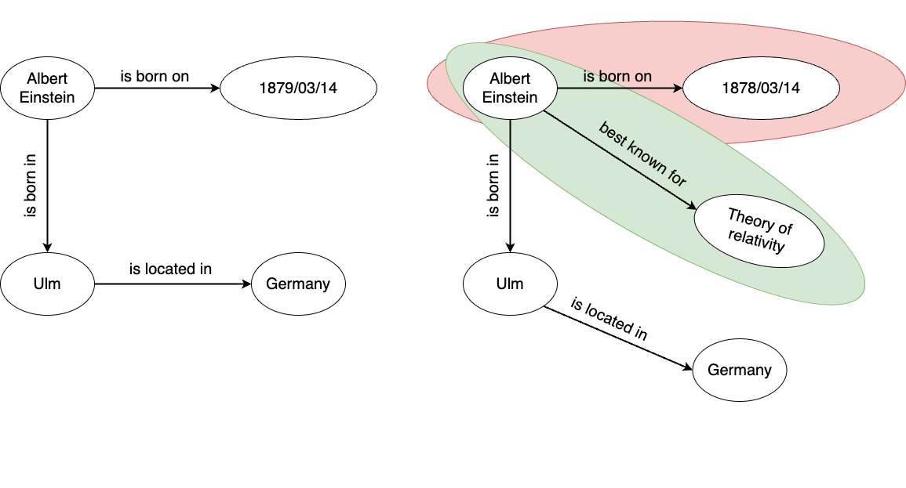
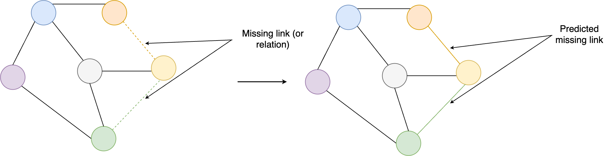
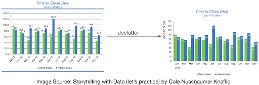

BrainKB serves as a knowledge base platform that provides scientists worldwide with tools for searching, exploring, and visualizing Neuroscience knowledge represented by knowledge graphs (KGs). Moreover, BrainKB provides cutting-edge tools that enable scientists to contribute new information (or knowledge) to the platform and is expected to be a go-to destination for all neuroscience-related research needs.
The main objective of BrainKB is to represent neuroscience knowledge as a knowledge graph such that it can be used for different downstream tasks, such as making predictions and new inferences in addition to querying and viewing information. The expected outcome of the BrainKB includes the following:
(Semi-)Automated extraction of neuroscience knowledge from structured, semi-structured, and unstructured sources, and representing the knowledge via KGs.
Visualization of the KGs.
Platform to perform different analytics operations over the BrainKB KGs.
(Semi-)Automated validation of the BrainKGs to ensure the high quality of the content.
Provides the ability to ingest data in batch or streaming mode for the automated extraction of KGs.
Limited Availability of Platforms for Integrating Neuroscience Data into Knowledge Graphs: In fields such as biomedicine, many platforms exist, such as, SPOKE and CIViC. However, such resources are comparatively limited in the domain of neuroscience.LinkRBrain, a web-based platform that integrates anatomical, functional, and genetic knowledge, is among the limited number of such resources. BrainKnow, the most recent platform, is another platform that is designed to synthesize and integrate neuroscience knowledge from scientific literature. Additionally, projects like DANDI, EBRAINS and Open Metadata Initiative are making strides by enabling sharing of neurophysiology data together with its metadata.
Lack of Support for Heterogeneous Data Sources: The current platforms in neuroscience are limited in their ability to handle a diverse range of data sources. For instance, LinkRBrain can only integrate knowledge from 41 databases, whereas BrainKnow solely focuses on scientific literature. However, knowledge is not restricted to just databases or scientific literature, and there is a need for platforms that can accommodate a wider variety of sources (e.g., structured, semi-structured and unstructured sources).
The following are the guiding principles based on which the BrainKB is being developed.
Structured (Modeled):
All information stored in the KG has associated data models or can be extracted to models. The information will be linked to formal ontologies and linked across datasets. All data models will have well defined schemas and descriptors for human and programmatic consumption.
Extensible (Read/Write):
The KG will allow for both information retrieval and upload. This involves a set of services and an API layer that allows for curation of information. The curation of information will reflect the data models. In addition, the KG will link, ingest, or cache other authoritative sources of information.
Curated (Expertise):
To support being an authoritative source, information entering the KG will indicate levels of curation. Such curation may take the form of expertise that is embedded into algorithms (e.g., quality metrics, alignment, mapping), is incorporated into data models (e.g., genes, anatomy), and is derived from computational and human analysis (e.g., atlases as outputs of working groups).
Usable (Utilitarian):
The architecture of the KG will be usable by humans and computational entities. The application interfaces will provide user interactivity and programmatic access. The KG will support competencies needed by the community.
Transparent (Basis):
To increase trust, the provenance of all information in the KG shall be maintained, including absence of provenance and available through the KG interfaces.
Programmable (Computable):
The information stored will lend itself to compute through appropriate APIs, data formats, and services. The KG shall connect to computational services to generate and provide inferred or derived information relevant to scientists.
The following are the envisioned features of the BrainKB.
Data Ingestion:
BrainKB will support the data from various sources in different formats (e.g., texts, JSON (JavaScript Object Notation)) for knowledge extraction via the BrainKB user interface (UI) and the API endpoints. Both batch and streaming data ingestion modes will be supported.
Schema Flexibility:
KGs evolve over time. For example, if we consider the case of the president of a country, it changes overtime. The KGs storing the information regarding the president of the country has to be updated accordingly. Similar is the case for the neuroscience or any other domain. The knowledge may change over time based on new research findings, thereby making previous knowledge obsolete or factually incorrect. Additionally, changes might also occur in the case of schema, such as due to the standardization or alignment or updates. While schema changes may not always be necessary, they may be required to accommodate new information. Therefore, BrainKB will support this evolution by allowing the addition (or removal) of entities and relationships (or new knowledge).
Example: The concepts may change over time, for example, due to major guideline changes or adoption of different standards, or they might become obsolete. For instance, in fields like biology, newer findings can invalidate existing terms, requiring flexibility in the schema to account for future changes.
Maintainability:
BrainKB shall be maintainable, allowing operations such as KG enrichment and validation to be performed easily.
Curation:
BrainKB will allow the community-driven curation of the KGs as well as (semi-) automated extraction and construction of KGs from external sources, e.g, scientific literatures.
Accuracy, Completeness and Consistency (ACC):
BrainKB shall ensure the accuracy of the knowledge for which multi-step (semi-) automated validations will be performed. Additionally, checks will also be performed to ensure that the KG triples are complete, i.e., the mandatory information is present. Further to accuracy and completeness, BrainKB shall ensure that adding the new facts (or KG triples) will not lead to inconsistency (see Fig. 2.1) with existing knowledge due to factual errors, data inconsistencies, and incompleteness.

Fig. 2.1 KGs. The image on the left shows the original knowledge graph, while the image on the right demonstrates the updated knowledge graph. The green highlighted box indicates new knowledge that has been added, while the red highlighted box indicates any inconsistencies caused by factual changes, i.e., incorrect date of birth.#
The ACC process will ensure human-centricity is maintained alongside automated validation.
Provenance:
To enable trust, the provenance, such as the source of the information and the curators (in the case of manual) of all the information, shall be maintained. The provenance conflict resolution mechanism will also be implemented to ensure the accuracy of the provenance information.
Querying and Reasoning:
BrainKB shall support the KGs’ querying and reasoning. It shall also support other downstream analytics tasks, such as link predictions (see Fig. 2.2) using machine learning techniques.

Fig. 2.2 KGs. Link prediction. The figure on the left indicates a KG with a missing link (or relation) indicated by dotted lines and the figure on the right displays the KG after the link prediction.#
Integration and Interoperability:
To ensure interoperability and ease of integration, BrainKB will focus on using standardized ontologies or schemas. However, not all standardized ontologies or schemas are available. In such cases, other schemas or ontologies must be used. To ensure the interoperability, the alignment will be performed where necessary.
Minimize Cognitive Burden and Data Fatigue:
As BrainKB will also provide features to perform the analytics operation in addition to querying the information (or knowledge), a special emphasis shall be placed on ensuring that the information presented to the user does not cause a cognitive burden and data fatigue. A cognitive burden occurs when the brain must exert more effort to understand information, typically resulting from an overload of visual content. For example, the Fig. 2.3 (left) places more cognitive burden than on the right.

Fig. 2.3 Cognitive burden due to information overload.#